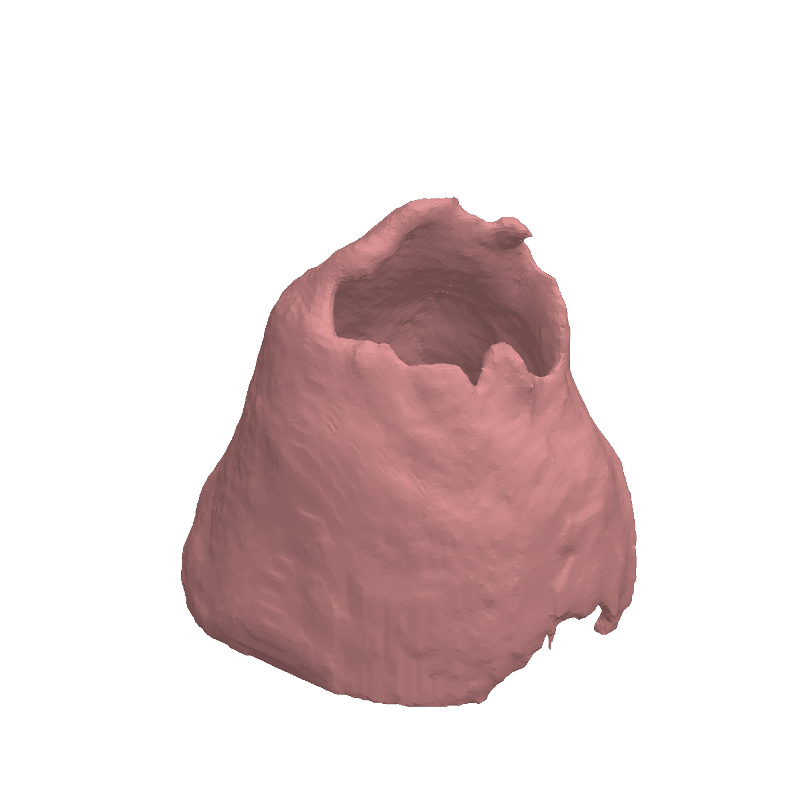

TEER
WEB-HOSTED ONLINE DEMO
· Real segmented anatomy and clip geometry; illustrative hemodynamics. The full physics solver is an integration in development. Research use only.
← Overview

Fetching geometry…
Diastole
×
TEER / RESEARCH WORKSPACE
Patient-derived valve explorer
Mesh Selection
Featured segmented valve · full resolution
Human Heart Model (31 MB - OBJ)
Simulation Mode
Automatic Cycle
Manual Control
Interactive Pump Controls
Push Blood (Hold)
Manual Flow Rate
180 mL/s
Anatomy & Physiology
MitraClip Placement
Off
Place virtual clip
Clip Position (X)
0.0 mm
Heart Rate
75 BPM
Mitral Regurgitation Gap
3.0 mm
Visualization settings
Surface shading
Tissue
Pressure Map
Mesh Opacity
100%
Particle Density
250
×
Illustrative Hemodynamics
SCENARIO COMPARISON
Baseline leak index
3.0
Current configuration
3.0
Enable the clip and adjust the position to explore a modeled change.
Left Atrium Pressure
-- mmHg
Left Ventricle Pressure
-- mmHg
Transmitral Flow Rate
-- mL/s
Reverse leak rate
Peak Max:
--
mL/s
-- mL/s
Pressure vs. Time Waveform
Camera Preset Angles
Atrial (Top)
Vent (Bottom)
Side view
Isometric
Atrial → ventricular
Systolic reverse jet
Pause cycle
Fit anatomy
Flow on
Droplets / tracers
PATIENT-DERIVED 3D ANATOMY
Drag to orbit · scroll to zoom · choose a camera preset
Controls & Settings
Telemetry HUD